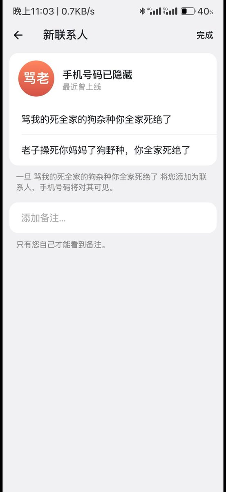

忒修斯
@Texiusizhichuan
诶那个之前盗林栖号的那个大愚若智（如果不是那个盗号的那当事人就自动代入），你要是大脑发育不完全，小脑完全不发育建议多去找你妈妈喝奶奶补补脑子或者吃点核桃喝点六个核桃，不要史还兜不住还在穿纸尿裤就过来骚扰我，迪奥都立不起来养胃的非人类还来找上存在感，不过我也不给你拉黑，多来给我们找找乐子，不然生活太平静了我们没有啥波浪，要是你这个钢门堵住满嘴喷奋的公交车不来找我们我们都觉得可惜了
